扫外箱生产批次标 → 系统按「生产批次号模式」建批入库（见右图入库点数界面）。
外箱标 = 产品标；扫外箱批次标（日期或非日期均可），不自编、不加后缀、不用系统流水号。
标签破损 / 扫不出 → 找主管核对供应商日期，收货台补打印，禁止手编。
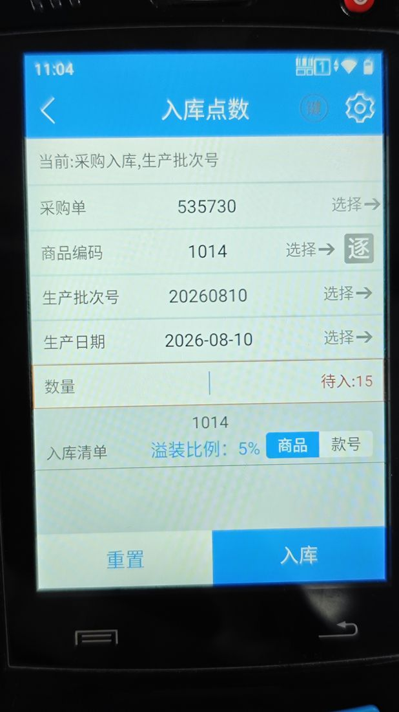
扫商品码 → 扫仓位 → 扫批次标，批次自动带出（取消手选，解「上架还要选批次」痛点）。
同仓位尽量单批次；卡板不码太高太深，旧批次放最易取层。
批次带不出（说明该批次未在系统维护）→ 先建批再上架，不空着跳过。
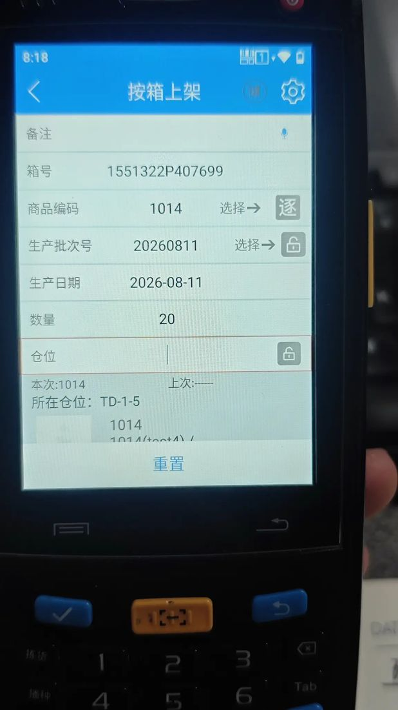
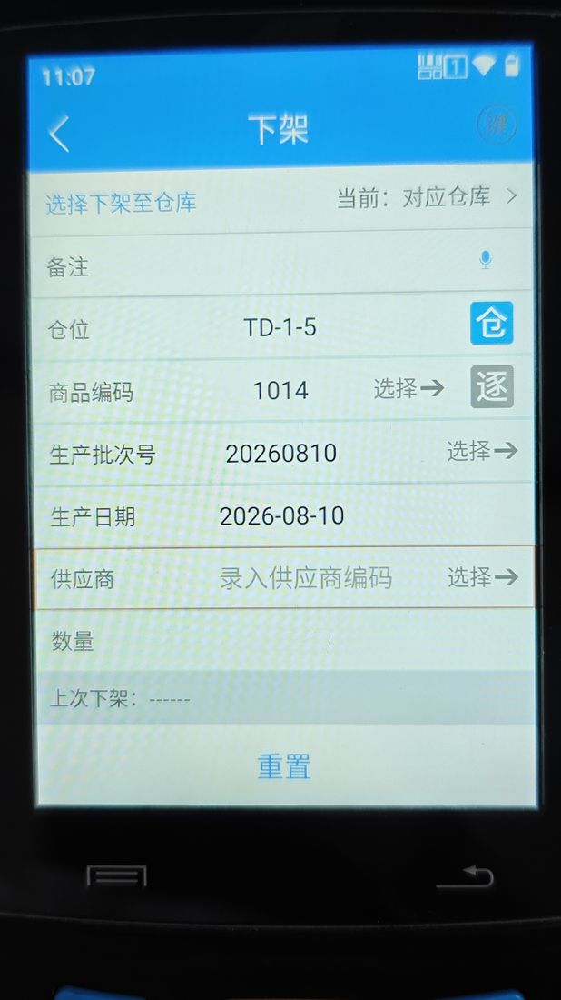
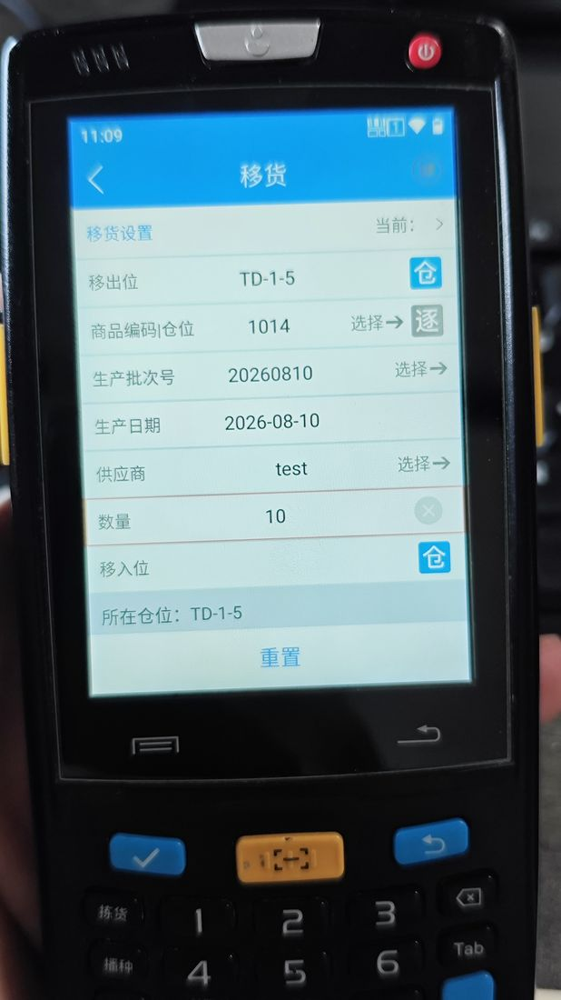
按 PDA 指派「仓位 + SKU」拣货，系统按该仓位该 SKU 的批次记录自动指派最旧批次（FIFO）。
拣货不扫批次，跟系统走；同进有/无批次时，先拣无批次、库位从小到大。
仓位没货 → 点「没有拣到货，跳过当前仓位」，不自行换批次。
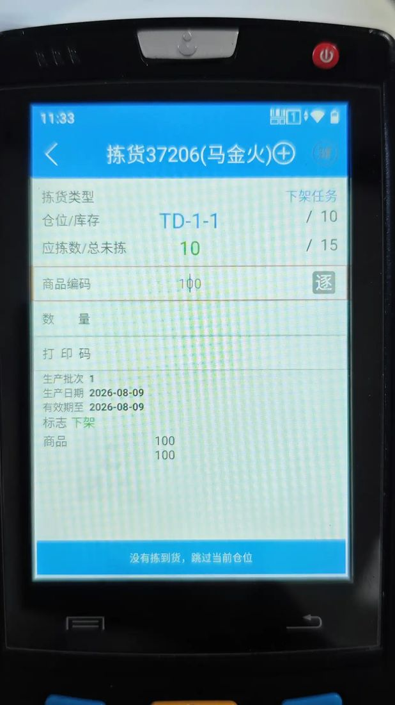
无批次旧库存 →「商品盘点」把该仓位 SKU 一次性盘入批次（一个仓位一次盘完、不分次）；历史库存整体可逐步补填，按仓位逐个来，不必一天补完。
有批次 →「商品单品盘点」选已有批次（选错 = 盘盈）；另有箱盘点 / 单一商品按箱盘点 / 盘点任务 / 巡仓盘点可选用。
分次盘会导致批次散落 → 退回重盘，一次性盘完整仓位。
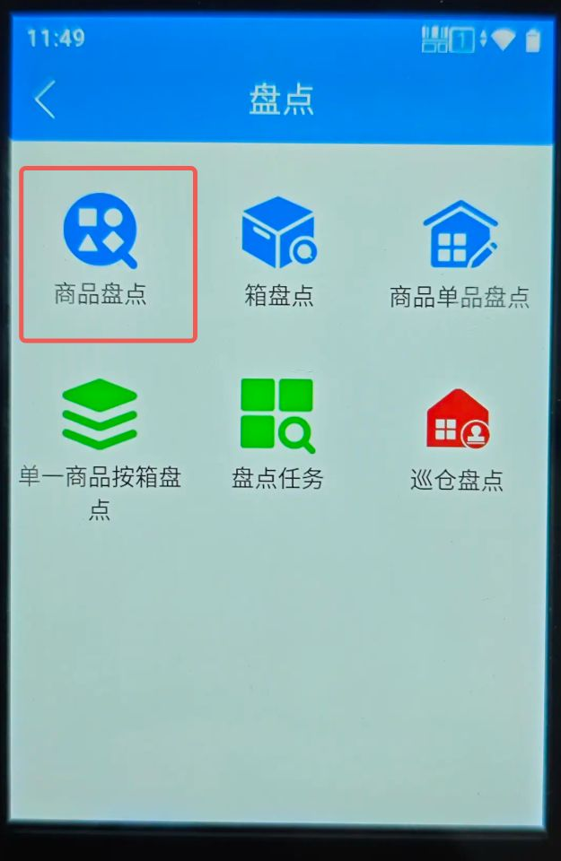
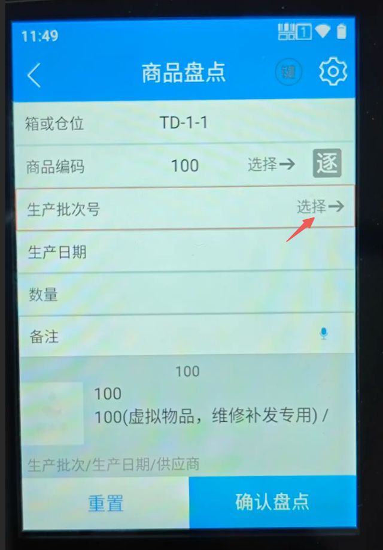
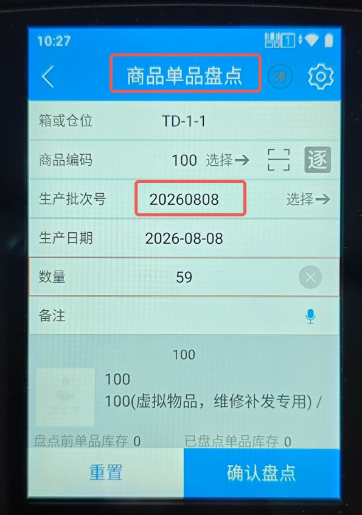
从仓位（非暂存位）调拨到对应分仓；不支持从暂存位发起。
特别注意 佳珞裴总仓 → 百世云仓的操作，重点验证批次是否保留、FIFO 是否连续。
调拨后批次丢失 → 确认能否从快照恢复，而非关功能回滚。
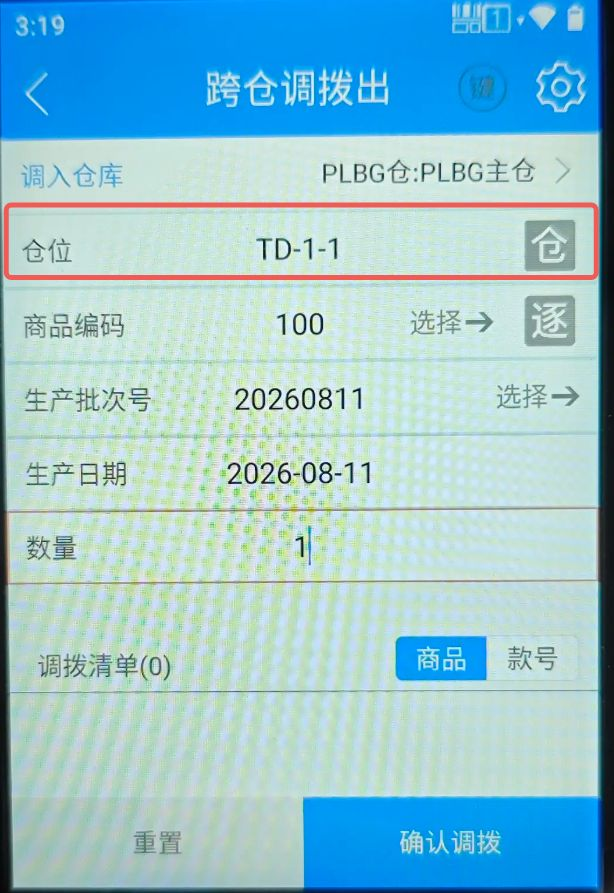
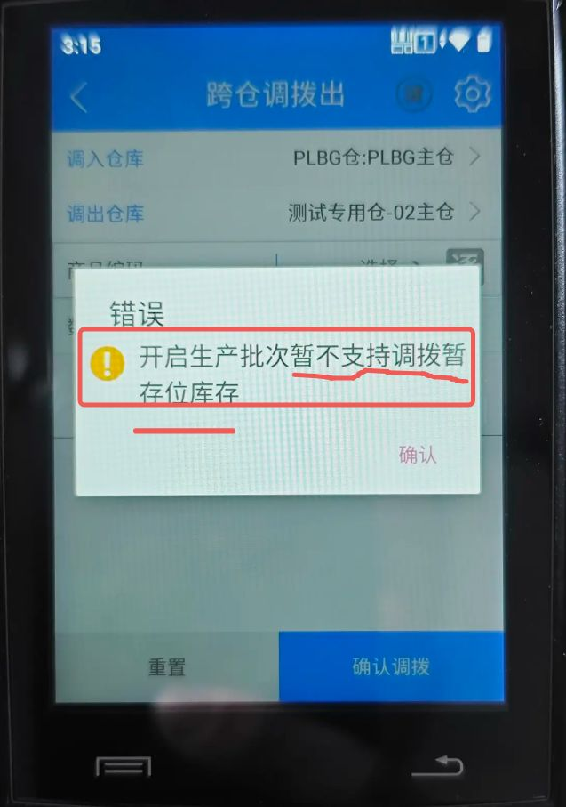
暂存位生产批次开关：混存阶段关、全批次化后开；存货区简化流程：开启后在仓位设存储区 / 拣货区。
生产批次开关严禁来回切（丢数据）；一位多批次改回一位一批次，须先把所有一位多批次移成一位一批次。
切开关前先全量导出批次库存快照；出问题靠快照恢复，不关功能。
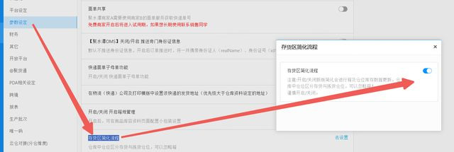
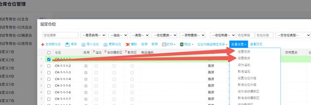
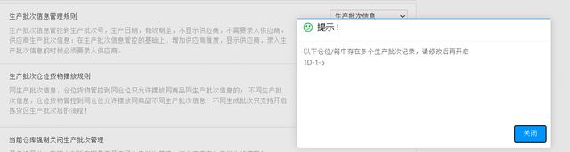
标签下方印的 20260809 / 20260810 就是生产批次号（批次码日期或非日期均可）。收货/上架扫它即可，不要另外编批次号。
新货由供应商贴批次号，库内旧库存由仓库贴批次号。
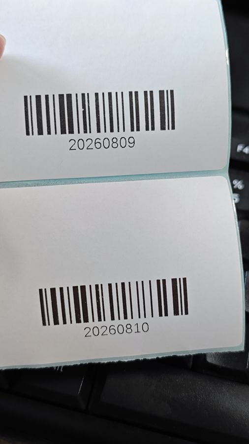
已向聚水潭提了优化需求，需求号为 R159775，但什么时候能优化，确定不了。如果想快速实现 FIFO，可以选择不用预约送货这个功能，仓库正常按采购单入库。
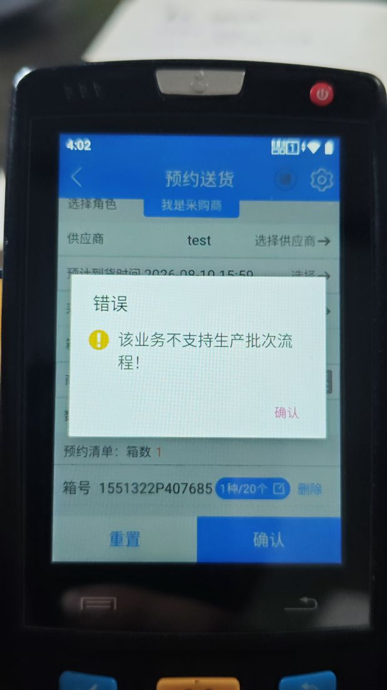
| 阶段 | 怎么做 |
|---|---|
| 上岗前 | 5 岗位各过一遍本 SOP + PDA 实操，重点练「扫标建批 / 上架带出 / 盘点选已有批次」三个动作。 |
| 三句口诀 | 只扫不手编（批次号）；跟着系统走（拣货不扫批次）；开关不来回切。 |
| 首周盯岗 | 标杆仓（佳珞裴）上线第一周，主管抽查收货/上架/盘点扫码记录，纠偏后再放独立操作。 |